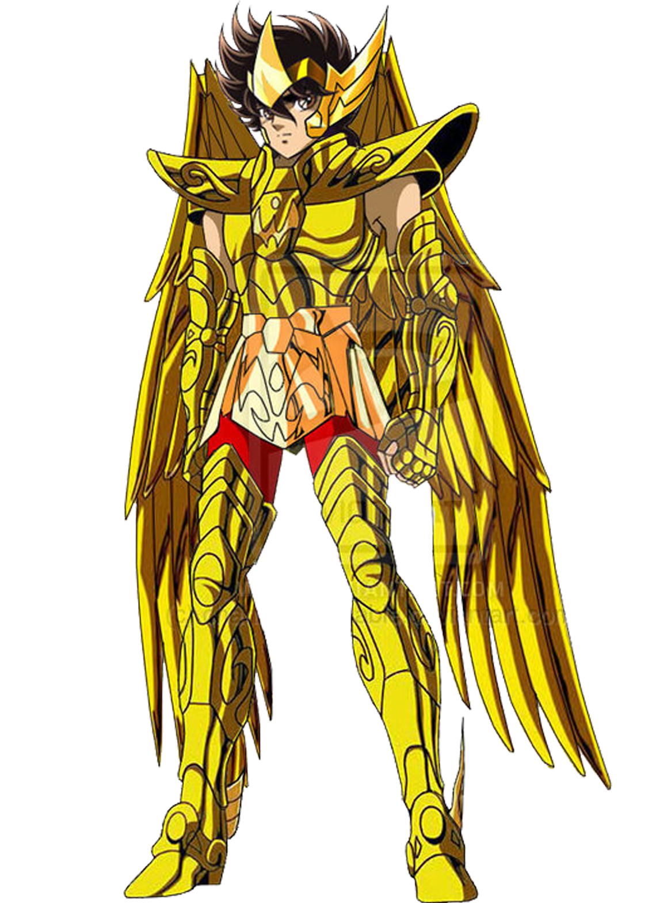
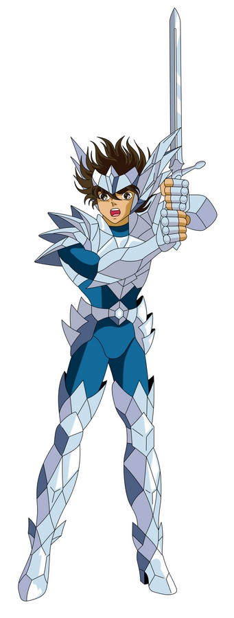
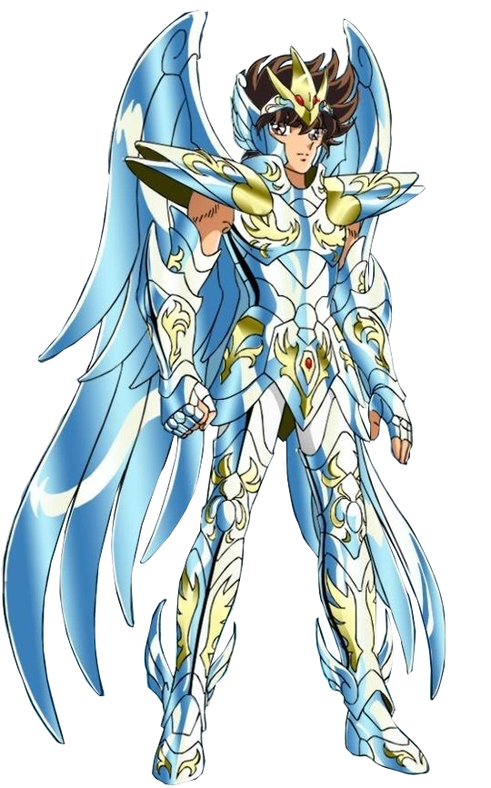

A armamadura sarcada de pegasus é uma armadura de bronse usada pelo protagonista do anime Seiya de pegasus. Essa armadura teve varias modificações a cada arco, sendo a v1 no começo do anime até o final do arco das 12 casas, a v2 que fica do começo do arco de Poceidon ate o começo do arco de Hades e a v3 que aparece nos primeiros episodios do arco de Hades ate o final do mesmo
Armadura de ouro de Sagitario

Uma das mais famosas armaduras de ouro ,a classe mais auta dentre as armaduras, a armadura de ouro de sagitario. Apos a morte de Aioros ,dono da armadura, a mesma permaneceu na casa de sagitario, mas sempre que Seiya está em estremo apuros a armadura vem para protegelo e fortalecelo durante a luta. Seiya ultilizou a armadura em quase todos os arcos, sendo, ao final da saga da Guerra galatica, no final do arco de Poceidon, em todos os filmes e no Helisios no arco de Hades.
Armadura de Odin

Possivelmente essa é uma das armaduras mais fortes que o prtagonista ja usou, ja que estamos falando de uma armadura sagrada pertencente a Odin o deus de Asgard e pai de todos na mitologia Nordica. Não pudemos ver muito dessa armadura no anime ja que se trata de um filer, Seiya usou essa armadura apenas uma vez na saga de Asgard e foi a unica vez e Seiya usou a armadura de um deus
Armadura Divina de pegasus

Agora sim!!, Em fim a mais forte armadura ja usada pelo nosso saco de porrada ambulante, a Armadura Divina de Pegasus. Mesmo ainda sendo a armadura de pegasus aqui ela ta tunada, após reseber o sangue da deusa Atena e ter seu cosmo elevado ao infinito, Seiya despertou sua armadura assim se igualando as armaduras dos deuses, as Kamuis. Seiya usou essa armadura apenas uma vez na sua luta contra Hades no Helisios na saga de Hades
De bonus temos a "famosa" armadura do filme live-action que quase todos os fãns,ou todos mesmo, se desepcionaram. O filme live-action de Cavaleiros dos Zodíaco troxe muitas controvérsias, principalmente pelas as "armaduras de papelão". Segundo a direção do filme, eles quiseram trazer uma visão mais medieval e antiga das armaduras, sem diser que é praticamente impocivel fazer uma replica perfeita das armaduras do anime para a vida real. Mesmo com todos os pontos baixos os fãns ainda vão nos cinemos com toneladas de esperança